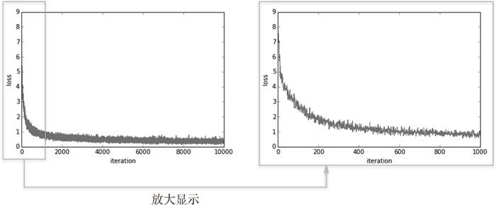
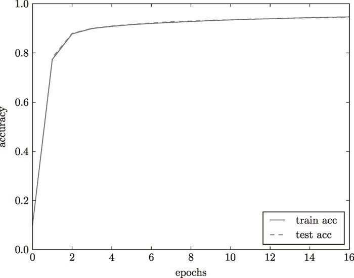

|
numerical_gradient() 的高速版，将在下一章实现 |
TwoLayerNet 类有 params 和 grads 两个字典型实例变量。params 变量中保存了权重参数，比如 params['W1'] 以 NumPy 数组的形式保存了第 1 层的权重参数。此外，第 1 层的偏置可以通过 param['b1'] 进行访问。这里来看一个例子。
net = TwoLayerNet(input_size=784, hidden_size=100, output_size=10)
net.params['W1'].shape # (784, 100)
net.params['b1'].shape # (100,)
net.params['W2'].shape # (100, 10)
net.params['b2'].shape # (10,)
如上所示，params 变量中保存了该神经网络所需的全部参数。并且，params 变量中保存的权重参数会用在推理处理（前向处理）中。顺便说一下，推理处理的实现如下所示。
x = np.random.rand(100, 784) # 伪输入数据（100笔）
y = net.predict(x)
此外，与 params 变量对应，grads 变量中保存了各个参数的梯度。如下所示，使用 numerical_gradient() 方法计算梯度后，梯度的信息将保存在 grads 变量中。
x = np.random.rand(100, 784) # 伪输入数据（100笔）
t = np.random.rand(100, 10) # 伪正确解标签（100笔）
grads = net.numerical_gradient(x, t) # 计算梯度
grads['W1'].shape # (784, 100)
grads['b1'].shape # (100,)
grads['W2'].shape # (100, 10)
grads['b2'].shape # (10,)
接着，我们来看一下 TwoLayerNet 的方法的实现。首先是 __init__(self, input_size, hidden_size, output_size) 方法，它是类的初始化方法（所谓初始化方法，就是生成 TwoLayerNet 实例时被调用的方法）。从第 1 个参数开始，依次表示输入层的神经元数、隐藏层的神经元数、输出层的神经元数。另外，因为进行手写数字识别时，输入图像的大小是 784（28 × 28），输出为 10 个类别，所以指定参数 input_size=784、output_size=10，将隐藏层的个数 hidden_size 设置为一个合适的值即可。
此外，这个初始化方法会对权重参数进行初始化。如何设置权重参数的初始值这个问题是关系到神经网络能否成功学习的重要问题。后面我们会详细讨论权重参数的初始化，这里只需要知道，权重使用符合高斯分布的随机数进行初始化，偏置使用 0 进行初始化。predict(self, x) 和 accuracy(self, x, t) 的实现和上一章的神经网络的推理处理基本一样。如果仍有不明白的地方，请再回顾一下上一章的内容。另外，loss(self, x, t) 是计算损失函数值的方法。这个方法会基于 predict() 的结果和正确解标签，计算交叉熵误差。
剩下的 numerical_gradient(self, x, t) 方法会计算各个参数的梯度。根据数值微分，计算各个参数相对于损失函数的梯度。另外，gradient(self, x, t) 是下一章要实现的方法，该方法使用误差反向传播法高效地计算梯度。

numerical_gradient(self, x, t) 基于数值微分计算参数的梯度。下一章，我们会介绍一个高速计算梯度的方法，称为误差反向传播法。用误差反向传播法求到的梯度和数值微分的结果基本一致，但可以高速地进行处理。使用误差反向传播法计算梯度的 gradient(self, x, t) 方法会在下一章实现，不过考虑到神经网络的学习比较花时间，想节约学习时间的读者可以替换掉这里的 numerical_gradient(self, x, t)，抢先使用 gradient(self, x, t) ！
4.5.2 mini-batch 的实现
神经网络的学习的实现使用的是前面介绍过的 mini-batch 学习。所谓 mini-batch 学习，就是从训练数据中随机选择一部分数据（称为 mini-batch），再以这些 mini-batch 为对象，使用梯度法更新参数的过程。下面，我们就以 TwoLayerNet 类为对象，使用 MNIST 数据集进行学习（源代码在 ch04/train_neuralnet.py 中）。
import numpy as np
from dataset.mnist import load_mnist
from two_layer_net import TwoLayerNet
(x_train, t_train), (x_test, t_test) = \ load_mnist(normalize=True, one_hot_
laobel = True)
train_loss_list = []
# 超参数
iters_num = 10000
train_size = x_train.shape[0]
batch_size = 100
learning_rate = 0.1
network = TwoLayerNet(input_size=784, hidden_size=50, output_size=10)
for i in range(iters_num):
# 获取mini-batch
batch_mask = np.random.choice(train_size, batch_size)
x_batch = x_train[batch_mask]
t_batch = t_train[batch_mask]
# 计算梯度
grad = network.numerical_gradient(x_batch, t_batch)
# grad = network.gradient(x_batch, t_batch) # 高速版!
# 更新参数
for key in ('W1', 'b1', 'W2', 'b2'):
network.params[key] -= learning_rate * grad[key]
# 记录学习过程
loss = network.loss(x_batch, t_batch)
train_loss_list.append(loss)
这里，mini-batch 的大小为 100，需要每次从 60000 个训练数据中随机取出 100 个数据（图像数据和正确解标签数据）。然后，对这个包含 100 笔数据的 mini-batch 求梯度，使用随机梯度下降法（SGD）更新参数。这里，梯度法的更新次数（循环的次数）为 10000。每更新一次，都对训练数据计算损失函数的值，并把该值添加到数组中。用图像来表示这个损失函数的值的推移，如图 4-11 所示。

图 4-11 损失函数的推移：左图是 10000 次循环的推移，右图是 1000 次循环的推移
观察图 4-11，可以发现随着学习的进行，损失函数的值在不断减小。这是学习正常进行的信号，表示神经网络的权重参数在逐渐拟合数据。也就是说，神经网络的确在学习！通过反复地向它浇灌（输入）数据，神经网络正在逐渐向最优参数靠近。
4.5.3 基于测试数据的评价
根据图 4-11 呈现的结果，我们确认了通过反复学习可以使损失函数的值逐渐减小这一事实。不过这个损失函数的值，严格地讲是“对训练数据的某个 mini-batch 的损失函数”的值。训练数据的损失函数值减小，虽说是神经网络的学习正常进行的一个信号，但光看这个结果还不能说明该神经网络在其他数据集上也一定能有同等程度的表现。
神经网络的学习中，必须确认是否能够正确识别训练数据以外的其他数据，即确认是否会发生过拟合。过拟合是指，虽然训练数据中的数字图像能被正确辨别，但是不在训练数据中的数字图像却无法被识别的现象。
神经网络学习的最初目标是掌握泛化能力，因此，要评价神经网络的泛化能力，就必须使用不包含在训练数据中的数据。下面的代码在进行学习的过程中，会定期地对训练数据和测试数据记录识别精度。这里，每经过一个 epoch，我们都会记录下训练数据和测试数据的识别精度。
epoch 是一个单位。一个 epoch 表示学习中所有训练数据均被使用过一次时的更新次数。比如，对于 10000 笔训练数据，用大小为 100 笔数据的 mini-batch 进行学习时，重复随机梯度下降法 100 次，所有的训练数据就都被“看过”了 6。此时，100 次就是一个 epoch。
6实际上，一般做法是事先将所有训练数据随机打乱，然后按指定的批次大小，按序生成 mini-batch。这样每个 mini-batch 均有一个索引号，比如此例可以是 0, 1, 2, ... , 99，然后用索引号可以遍历所有的 mini-batch。遍历一次所有数据，就称为一个epoch。请注意，本节中的mini-batch 每次都是随机选择的，所以不一定每个数据都会被看到。——译者注
为了正确进行评价，我们来稍稍修改一下前面的代码。与前面的代码不同的地方，我们用粗体来表示。
import numpy as np
from dataset.mnist import load_mnist
from two_layer_net import TwoLayerNet
(x_train, t_train), (x_test, t_test) = \ load_mnist(normalize=True, one_hot_
laobel = True)
train_loss_list = []
train_acc_list = []
test_acc_list = []
# 平均每个epoch的重复次数
iter_per_epoch = max(train_size / batch_size, 1)
# 超参数
iters_num = 10000
batch_size = 100
learning_rate = 0.1
network = TwoLayerNet(input_size=784, hidden_size=50, output_size=10)
for i in range(iters_num):
# 获取mini-batch
batch_mask = np.random.choice(train_size, batch_size)
x_batch = x_train[batch_mask]
t_batch = t_train[batch_mask]
# 计算梯度
grad = network.numerical_gradient(x_batch, t_batch)
# grad = network.gradient(x_batch, t_batch) # 高速版!
# 更新参数
for key in ('W1', 'b1', 'W2', 'b2'):
network.params[key] -= learning_rate * grad[key]
loss = network.loss(x_batch, t_batch)
train_loss_list.append(loss)
# 计算每个epoch的识别精度
if i % iter_per_epoch == 0:
train_acc = network.accuracy(x_train, t_train)
test_acc = network.accuracy(x_test, t_test)
train_acc_list.append(train_acc)
test_acc_list.append(test_acc)
print("train acc, test acc | " + str(train_acc) + ", " + str(test_acc))
在上面的例子中，每经过一个 epoch，就对所有的训练数据和测试数据计算识别精度，并记录结果。之所以要计算每一个 epoch 的识别精度，是因为如果在 for 语句的循环中一直计算识别精度，会花费太多时间。并且，也没有必要那么频繁地记录识别精度（只要从大方向上大致把握识别精度的推移就可以了）。因此，我们才会每经过一个 epoch 就记录一次训练数据的识别精度。
把从上面的代码中得到的结果用图表示的话，如图 4-12 所示。

图 4-12 训练数据和测试数据的识别精度的推移（横轴的单位是 epoch）
图 4-12 中，实线表示训练数据的识别精度，虚线表示测试数据的识别精度。如图所示，随着 epoch 的前进（学习的进行），我们发现使用训练数据和测试数据评价的识别精度都提高了，并且，这两个识别精度基本上没有差异（两条线基本重叠在一起）。因此，可以说这次的学习中没有发生过拟合的现象。